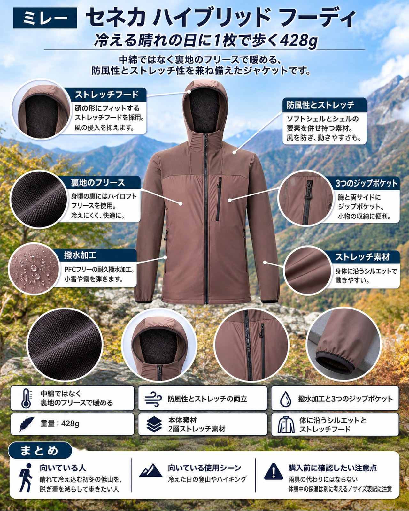

今週は9日（月）の冷たい雨と高所の雪のあと、11〜13日は晴れ間が戻る予報です。北アルプスは冬山に入り、上高地も15日に閉山を迎えます。近郊の低山は紅葉の見頃に入りますが、都心でも最低気温は7℃前後まで下がり、晴れた朝ほど登山口は冷え込みます。そんな日の行動着として紹介したいのが、ミレーの「セネカ ハイブリッド フーディ（メンズ）」（品番 MIV10730）です。低温下で汗を多くかく活動を想定した「アクティブサーマルジャケット」です。YAMA FITではこれまで中綿入りの行動保温着を取り上げてきましたが、今回は中綿ではなく「フリース裏地の防風ジャケット」という作りに注目し、寒い晴れの日に1枚で歩けるかという視点で見ていきます。
基本スペック
※価格・仕様は2026年11月10日時点の表示です。
| 項目 | 内容 |
|---|---|
| 商品名 | セネカ ハイブリッド フーディ（メンズ） |
| 品番 | MIV10730 |
| 重量 | 428g |
| 素材 | 2層ストレッチ素材（ポリエステル100%）＋フリース裏地、PFCフリー耐久撥水加工 |
| サイズ | XS / S / M / L（EUROサイズ表記。例：S＝日本のM） |
| カラー | TRUFFLE、BLACK - NOIR、DARK DENIM |
| ポケット | チェストジップポケット、ジップハンドポケット×2 |
| 価格 | 27,500円（税込） |
中綿ではなく「裏地のフリース」で暖める
身頃はストレッチ性のある2層素材で、保温性を高めたい身頃の裏にはハイロフトフリース、肩と腕まわりにはグリッドフリースの裏地を使っています。部位によって裏地を変える作りで、体幹は暖かく、よく動かす腕まわりは動きやすさと通気性を優先しています。シェルとフリースを重ねる代わりに、この1枚で済ませたい日に向いた構成です。
防風性とストレッチの両立
ソフトシェルとシェルの要素を併せ持ち、十分な防風性を持たせたジャケットです。一部の紹介では、露出しやすい部分に2層の生地を配置し、ストレッチ素材を要所に使った作りとされています。晴れていても風の冷たい稜線や、日の当たらない樹林帯の朝に、羽織ったまま歩き続けやすい作りです。
体に沿うシルエットとストレッチフード
身体に沿うスリムなシルエットと、頭の形にフィットするストレッチフードを採用しています。袖口も伸縮性のあるカフで、手袋の脱ぎ着やまくり上げがしやすい作りです。ザックのショルダーハーネスの下でもたつきにくいのは、行動着としてうれしい点です。
撥水加工と3つのジップポケット
PFCフリーの耐久撥水加工が施されており、小雪や霧で表面が濡れる程度なら弾いてくれます。収納はチェストポケットと左右のハンドポケットの3つで、すべてジップ付きです。行動食や地図、スマートフォンを分けて入れられます。
デメリット・注意点
- 雨具の代わりにはならない：説明は撥水加工と防風性までで、防水の雨具としての性能は示されていません。14〜15日のように雨が予報される日は、レインウェアを別に持ちましょう。
- 休憩中の保温は別に考える：汗をかく行動中を想定した作りです。山頂での長い休憩や朝夕の冷え込みには、ダウンなどの保温着を重ねる前提で考えましょう。
- サイズ表記に注意：EUROサイズ表記で、「Sサイズ＝日本のMサイズ」とされています。普段の日本サイズのまま選ぶと大きすぎることがあります。スリムな作りなので、中に着るものも考えて試着がおすすめです。
向いている人・向いていない人
◎向いている人
- 晴れて冷え込む初冬の低山を、脱ぎ着を減らして歩きたい人
- シェルとフリースを重ねる代わりに、1枚で風と冷えに備えたい人
- 体に沿う動きやすい行動着が好みの人
△向いていない人
- 雨の日の上着としても使いたい人
- 停滞時間が長く、保温力を最優先したい人
- ゆったりしたシルエットが好みの人
まとめ
セネカ ハイブリッド フーディは、ストレッチ性のある2層の防風素材に部位ごとのフリース裏地を組み合わせた、428gのアクティブサーマルジャケットです。汗をかきながら寒さの中を歩く日のための1枚で、雨や長い休憩には別の装備が必要です。晴れ間の戻る週の中ごろ、冷え込む朝の紅葉の低山で、行動中の1枚を見直してみてください。
この記事で紹介した商品
価格・重量・在庫は各ブランド公式サイトの記載（確認日つき）にもとづきます。商品を押すと、購入先を選べます。
この記事にはアフィリエイト広告が含まれます。リンク先での購入により、当サイトが報酬を受け取る場合があります。山行の前には、最新の気象とルートの状況を必ずご確認ください。